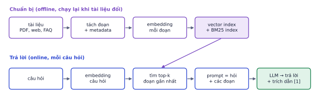
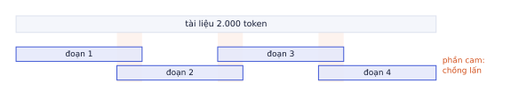
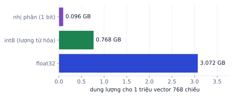
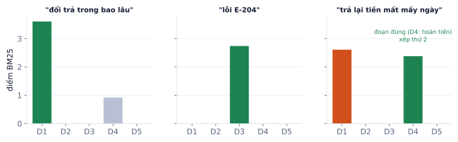

Bài 1
Xếp hạng bằng cosine
tính tayCâu hỏi q = [1, 0]. Ba đoạn đã chuẩn hóa: a = [0.8, 0.6], b = [0.6, 0.8], c = [0, 1].
Lời giải
Vector đã có độ dài 1 nên cosine bằng tích vô hướng: a = 0.8, b = 0.6, c = 0. Thứ tự a, b, c.
LLM không biết tài liệu nội bộ của công ty bạn, và kiến thức của nó dừng ở thời điểm train. RAG (Retrieval-Augmented Generation) giải quyết bằng cách tìm các đoạn tài liệu liên quan rồi đưa vào prompt để LLM trả lời dựa trên chúng, kèm trích dẫn. Đây là kỹ năng được nhắc trong khoảng 40% tin tuyển dụng AI Engineer, và là dự án portfolio tốt nhất để bắt đầu.
Chatbot trả lời về chính sách công ty, trợ lý tra cứu quy chế đào tạo, hệ thống hỏi đáp tài liệu kỹ thuật: gần như mọi ứng dụng LLM "biết về dữ liệu của bạn" đều là RAG. Hiểu từng bước giúp bạn biết lỗi nằm ở đâu khi câu trả lời sai.

Chuẩn bị (offline): tài liệu → tách đoạn (chunk) → embedding → lưu vào vector index
Trả lời (online): câu hỏi → embedding → tìm top-k đoạn gần nhất → prompt = câu hỏi + các đoạn → LLM → câu trả lời + trích dẫn
| Tình huống | Chọn | Vì sao |
|---|---|---|
| Kiến thức thay đổi thường xuyên (giá, chính sách, tồn kho) | RAG | cập nhật bằng cách thay tài liệu, không train lại |
| Cần trích dẫn nguồn để người dùng kiểm tra | RAG | biết chính xác câu trả lời dựa trên đoạn nào |
| Phân quyền: mỗi người chỉ được xem tài liệu của mình | RAG | lọc theo quyền ngay khi tìm kiếm |
| Đổi cách model viết (giọng văn, định dạng) | fine-tune | đó là "kỹ năng", không phải "kiến thức" |
| Tác vụ hẹp, lặp lại hàng triệu lần, cần rẻ | fine-tune model nhỏ | model nhỏ đã fine-tune rẻ hơn model lớn + prompt dài |
Hai cách không loại trừ nhau: nhiều hệ thống fine-tune model để trả lời đúng định dạng, rồi dùng RAG để cung cấp kiến thức.
Context của model hiện đại rất dài (hàng trăm nghìn token), nên có thể hỏi: sao không đưa hết tài liệu vào? Với vài chục trang thì đó thường là cách tốt. Nhưng với hàng nghìn tài liệu: chi phí mỗi câu hỏi tăng theo độ dài context (P4.1), độ trễ tăng, và model hay bỏ sót thông tin nằm giữa context dài. RAG chỉ đưa vào vài đoạn liên quan nhất.
Đơn vị tìm kiếm là đoạn, không phải cả tài liệu. Cách cắt đoạn quyết định một câu trả lời có nằm gọn trong một đoạn tìm được hay bị chia đôi ở hai đoạn mà không đoạn nào đủ nghĩa.
Đoạn quá dài thì embedding bị "pha loãng" (một vector phải đại diện cho nhiều ý) và tốn context; quá ngắn thì mất ngữ cảnh ("thời hạn là 30 ngày" mà không biết thời hạn của cái gì). Điểm khởi đầu hợp lý: 300–800 token, chồng lấn 10–20% để câu bị cắt ngang ở ranh giới vẫn nằm trọn ở một đoạn.

Tài liệu 20.000 token, đoạn 500 token, chồng lấn 200 token (bước nhảy 300): số đoạn = ⌈(20.000 − 500) / 300⌉ + 1 = 66 đoạn. Không chồng lấn thì chỉ 40 đoạn. Chồng lấn tăng số đoạn (tốn thêm embedding và bộ nhớ) để đổi lấy ít câu bị cắt đôi.
Tách theo cấu trúc khi có thể: tiêu đề, đoạn văn, điều khoản, mục FAQ. Một điều khoản "Điều 5. Đổi trả" là một đơn vị nghĩa tự nhiên; cắt mù theo số ký tự có thể cắt đôi nó.
| Loại tài liệu | Cách cắt tốt |
|---|---|
| Quy chế, hợp đồng | theo điều, khoản |
| FAQ | mỗi cặp hỏi–đáp một đoạn |
| Tài liệu kỹ thuật, Markdown | theo tiêu đề #, ## |
| Bảng | giữ nguyên bảng, hoặc mỗi hàng thành một câu có tên cột |
| Văn bản dài không cấu trúc | cửa sổ trượt có chồng lấn |
Gắn metadata cho mỗi đoạn: tên tài liệu, mục, trang, ngày cập nhật, quyền truy cập. Dùng để:
PDF trích xuất ra rác. PDF nhiều cột, bảng, đầu trang/chân trang lặp lại thường cho văn bản lộn xộn: chữ hai cột trộn vào nhau, số trang chen giữa câu. Trước khi lo chọn embedding, in ra 10 đoạn ngẫu nhiên và đọc. Một nửa số vấn đề RAG được giải quyết bằng làm sạch văn bản.
Người dùng hỏi "trả lại tiền mất mấy ngày" nhưng tài liệu viết "hoàn tiền được thực hiện trong 5 ngày làm việc". Không có từ nào trùng, nhưng nghĩa giống. Embedding tìm theo nghĩa, không theo từ.
Model embedding biến mỗi đoạn thành một vector (P3.1), sao cho đoạn cùng nghĩa có vector gần nhau theo cosine. Câu hỏi cũng được embedding bằng cùng model, rồi tìm các đoạn có cosine cao nhất.
from sentence_transformers import SentenceTransformer
import faiss, numpy as np
emb = SentenceTransformer("BAAI/bge-m3")
X = emb.encode(chunks, normalize_embeddings=True) # (n, d), đã chuẩn hóa độ dài 1
index = faiss.IndexFlatIP(X.shape[1]); index.add(X) # tích vô hướng = cosine khi đã chuẩn hóa
q = emb.encode(["Chính sách đổi trả trong bao lâu?"], normalize_embeddings=True)
scores, ids = index.search(q, k=5) # 5 đoạn có cosine cao nhất
Với tiếng Việt, chọn model đa ngôn ngữ (họ BGE-M3, multilingual E5, các model tiếng Việt fine-tune riêng) và đo trên câu hỏi thật của bạn. Bảng xếp hạng công khai (MTEB) là điểm khởi đầu, nhưng thứ hạng trên dữ liệu tiếng Anh tổng quát không chắc đúng với tài liệu tiếng Việt chuyên ngành của bạn.
| Tiêu chí | Cân nhắc |
|---|---|
| Chất lượng | recall@k trên bộ câu hỏi của bạn |
| Số chiều | 384–1024 chiều; nhiều chiều hơn tốn bộ nhớ hơn |
| Độ dài tối đa | đoạn dài hơn giới hạn của model bị cắt mất phần cuối |
| Chạy ở đâu | API (tiện) hay tự chạy trên GPU/CPU (dữ liệu không ra ngoài) |
Đổi model embedding mà không embedding lại toàn bộ. Vector từ hai model khác nhau nằm trong hai "không gian" khác nhau, không so được với nhau. Đổi model là phải embedding lại mọi đoạn. Lưu tên model và phiên bản cùng index.
IndexFlatIP so câu hỏi với mọi vector: chính xác, nhưng chậm khi có hàng chục triệu đoạn. Index gần đúng như HNSW (đồ thị các điểm láng giềng) hay IVF (chia không gian thành cụm, chỉ tìm trong vài cụm gần nhất, giống k-means ở P1.4) nhanh hơn hàng trăm lần, đổi lấy một chút recall.
Bộ nhớ cũng tăng nhanh:

Vector database (Qdrant, pgvector trên PostgreSQL, Milvus, Weaviate) thêm lưu trữ bền vững, lọc theo metadata, cập nhật từng đoạn, và chạy được nhiều máy. Với dự án dưới vài trăm nghìn đoạn, FAISS trong bộ nhớ hoặc pgvector (nếu đã có PostgreSQL, P8.4) là đủ.
Embedding giỏi bắt nghĩa nhưng hay bỏ lỡ chi tiết chính xác: mã lỗi, mã sản phẩm, số hiệu văn bản, tên riêng hiếm. Tìm kiếm từ khóa cổ điển làm tốt đúng những chỗ đó. Kết hợp hai cách gần như luôn tốt hơn từng cách riêng.
BM25 chấm điểm một đoạn theo các từ trong câu hỏi xuất hiện trong đoạn:
BM25(q, d) = Σ_{từ t trong q} IDF(t) · tf(t, d)·(k₁ + 1) / (tf(t, d) + k₁·(1 − b + b·|d|/avgdl))
IDF(t) = log( (N − n(t) + 0.5) / (n(t) + 0.5) + 1 )
Năm đoạn chính sách của một shop, BM25 với k₁ = 1.5, b = 0.75 (tách theo âm tiết):
| Câu hỏi | Điểm cao nhất | Đúng không |
|---|---|---|
| "đổi trả trong bao lâu" | D1 = 3.60 | đúng |
| "lỗi E-204" | D3 = 2.74 (các đoạn khác 0) | đúng: khớp chính xác mã lỗi |
| "trả lại tiền mất mấy ngày" | D1 = 2.61, D4 = 2.38 | sai: D1 thắng vì trùng "trả" và "ngày" |
Câu thứ ba hỏi về hoàn tiền (D4), nhưng BM25 không biết "trả lại tiền" đồng nghĩa với "hoàn tiền". Embedding thường xếp D4 lên đầu ở câu này, nhưng có thể bỏ lỡ "E-204" ở câu thứ hai.

Hybrid search chạy cả BM25 và vector search, rồi gộp hai danh sách kết quả. Vì điểm BM25 (0 tới vài chục) và cosine (−1 tới 1) khác thang đo, cách gộp phổ biến nhất là theo thứ hạng (Reciprocal Rank Fusion), chi tiết ở P4.5 cùng với reranker.
| BM25 | Embedding | Hybrid | |
|---|---|---|---|
| Mã, số hiệu, tên riêng | tốt | kém | tốt |
| Đồng nghĩa, diễn đạt khác | kém | tốt | tốt |
| Cần GPU | không | có (hoặc API) | có |
Tìm đúng đoạn mới là một nửa. Nửa còn lại là buộc LLM chỉ dùng các đoạn đó, nói rõ khi không biết, và ghi nguồn để người dùng kiểm tra được.
Trả lời câu hỏi CHỈ dựa trên các đoạn tài liệu dưới đây.
Sau mỗi ý, ghi nguồn dạng [1], [2] theo số thứ tự đoạn.
Nếu tài liệu không đủ để trả lời, nói rõ "Tài liệu không có thông tin này".
<doc id="1" source="chinh-sach-doi-tra.pdf, trang 2">...</doc>
<doc id="2" source="faq.md, mục Giao hàng">...</doc>
Câu hỏi: ...
Ba yêu cầu then chốt: chỉ dùng tài liệu (giảm bịa), trích dẫn (người dùng kiểm tra được, bạn đo được độ trung thực), được phép nói không biết (thay vì đoán).
Câu hỏi: "Mua bàn online được đổi trong bao lâu, đổi thì ai trả phí ship?"
Đoạn tìm được: [1] đổi trả 30 ngày; [2] phí giao hàng nội thành 30 nghìn đồng.
Câu trả lời tốt: "Bạn được đổi trả trong vòng 30 ngày kể từ ngày nhận hàng [1]. Tài liệu không có thông tin về việc ai chịu phí vận chuyển khi đổi trả." Câu trả lời tệ (bịa): "…và shop chịu phí ship khi đổi [2]": đoạn [2] nói về phí giao hàng chứ không nói về đổi trả. Trích dẫn sai kiểu này là thứ bộ đánh giá ở P4.3 phải bắt được.
Lỗi RAG chia thành hai loại, sửa theo hai cách khác nhau:
| Loại lỗi | Dấu hiệu | Sửa ở đâu |
|---|---|---|
| Lỗi tìm kiếm | đoạn đúng không có trong top-k | chunking, model embedding, hybrid, reranker |
| Lỗi sinh | đoạn đúng có trong top-k nhưng trả lời sai, bịa, trích dẫn sai | prompt, model LLM, số đoạn đưa vào |
Đo tìm kiếm bằng recall@k: trong các câu hỏi có đoạn đúng đã biết, bao nhiêu phần trăm câu có đoạn đúng nằm trong top-k.
Ghi nhớ: phần lớn lỗi RAG nằm ở bước tìm kiếm, không phải ở LLM. Nếu đoạn đúng không có trong top-k, model giỏi đến đâu cũng không trả lời đúng được. Luôn đo retrieval riêng.
Bộ đánh giá 40 câu hỏi, mỗi câu có đúng 1 đoạn đúng. Đoạn đúng nằm trong top-3 ở 28 câu, trong top-10 ở 36 câu.
| Bước | Lựa chọn chính | Lỗi hay gặp |
|---|---|---|
| Làm sạch | đọc thử văn bản trích xuất | PDF lộn xộn |
| Chunking | 300–800 token, chồng lấn 10–20%, theo cấu trúc | cắt đôi ý, thiếu ngữ cảnh |
| Embedding | model đa ngôn ngữ, đo recall@k | đổi model mà không embedding lại |
| Index | Flat (nhỏ), HNSW/IVF (lớn), vector DB | quên metadata để lọc và trích dẫn |
| Tìm kiếm | hybrid BM25 + vector | chỉ dùng một cách |
| Sinh | chỉ dùng tài liệu, trích dẫn, được nói không biết | bịa, trích dẫn sai |
| Thuật ngữ | Nghĩa |
|---|---|
| RAG | sinh câu trả lời có bổ sung tài liệu tìm được |
| chunk / chunking | đoạn / tách tài liệu thành đoạn |
| overlap | phần chồng lấn giữa hai đoạn liền nhau |
| metadata | thông tin kèm đoạn: nguồn, trang, ngày, quyền |
| embedding model | model biến văn bản thành vector |
| vector index / vector database | cấu trúc / hệ thống tìm vector gần nhất |
| ANN (HNSW, IVF) | tìm láng giềng gần đúng, nhanh |
| BM25 | chấm điểm theo từ khóa, có IDF và bão hòa tf |
| IDF | trọng số nghịch với độ phổ biến của từ |
| hybrid search | kết hợp tìm từ khóa và tìm vector |
| top-k | k kết quả có điểm cao nhất |
| recall@k | tỉ lệ câu hỏi có đoạn đúng trong top-k |
| grounding / citation | bám vào tài liệu / trích dẫn nguồn |
Câu hỏi q = [1, 0]. Ba đoạn đã chuẩn hóa: a = [0.8, 0.6], b = [0.6, 0.8], c = [0, 1].
Vector đã có độ dài 1 nên cosine bằng tích vô hướng: a = 0.8, b = 0.6, c = 0. Thứ tự a, b, c.
Tài liệu 10.000 token, chunk 500 token, chồng lấn 100 token (mỗi đoạn mới bắt đầu sau đoạn trước 400 token).
Đoạn thứ i bắt đầu ở 400·(i − 1). Đoạn cuối phải phủ tới token 10.000: cần 400·(n − 1) + 500 ≥ 10.000, nên n − 1 ≥ 23,75, n = 25. Chồng lấn làm tăng 25% số đoạn so với 20 đoạn không chồng.
Câu hỏi có 2 đoạn đúng. Top-5 kết quả tìm được chứa 1 trong 2 đoạn đó.
Recall@5 = 1/2: tìm được một nửa đoạn cần thiết. Precision@5 = 1/5. Với RAG, recall quan trọng hơn: đoạn thừa thì LLM bỏ qua được, đoạn thiếu thì không bù được.
1 triệu đoạn, embedding 1024 chiều, lưu fp32. 1 GB = 10⁹ byte.
10⁶ × 1024 × 4 byte = 4,1 GB, phải nằm trong RAM để tìm nhanh. Các cách giảm: lưu fp16 (một nửa), lượng tử hóa vector (PQ, binary), hoặc model embedding nhỏ hơn.
Với mỗi câu hỏi sau gửi tới hệ RAG trên bộ tài liệu chính sách công ty, dự đoán bước nào dễ hỏng (chunking, retrieval, hay generation) và đề xuất cách sửa:
Xây hệ RAG trên một bộ tài liệu thật, ví dụ quy chế đào tạo của trường, tài liệu sản phẩm, hoặc bộ luật một lĩnh vực (20–100 trang).
Các bước
rank_bm25) và gộp đơn giản (xen kẽ hai danh sách, bỏ trùng).Xong khi
import faiss, numpy as np, re
from rank_bm25 import BM25Okapi
from sentence_transformers import SentenceTransformer
emb = SentenceTransformer("BAAI/bge-m3")
X = emb.encode([c["text"] for c in chunks], normalize_embeddings=True, show_progress_bar=True)
index = faiss.IndexFlatIP(X.shape[1]); index.add(X.astype("float32"))
tokenize = lambda s: re.findall(r"\w+", s.lower())
bm25 = BM25Okapi([tokenize(c["text"]) for c in chunks])
def search(q, k=5, mode="hybrid"):
vec = list(index.search(emb.encode([q], normalize_embeddings=True).astype("float32"), k)[1][0])
kw = list(np.argsort(-bm25.get_scores(tokenize(q)))[:k])
if mode == "vector": return vec
if mode == "bm25": return kw
merged = [x for pair in zip(vec, kw) for x in pair] # xen kẽ hai danh sách
return list(dict.fromkeys(merged))[:k] # bỏ trùng, giữ thứ tự
def answer(q):
hits = search(q)
docs = "\n".join(f'<doc id="{i + 1}" source="{chunks[h]["source"]}">{chunks[h]["text"]}</doc>' for i, h in enumerate(hits))
prompt = (f"Trả lời CHỈ dựa trên tài liệu. Ghi nguồn [số] sau mỗi ý. Nếu không đủ thông tin, nói rõ.\n\n{docs}\n\nCâu hỏi: {q}")
out = client.messages.create(model="claude-haiku-5-5", max_tokens=700, messages=[{"role": "user", "content": prompt}])
return out.content[0].text, [chunks[h] for h in hits]
def recall_at_k(qa, k=5, mode="hybrid"):
return np.mean([len(set(search(x["q"], k, mode)) & set(x["gold_ids"])) / len(x["gold_ids"]) for x in qa])